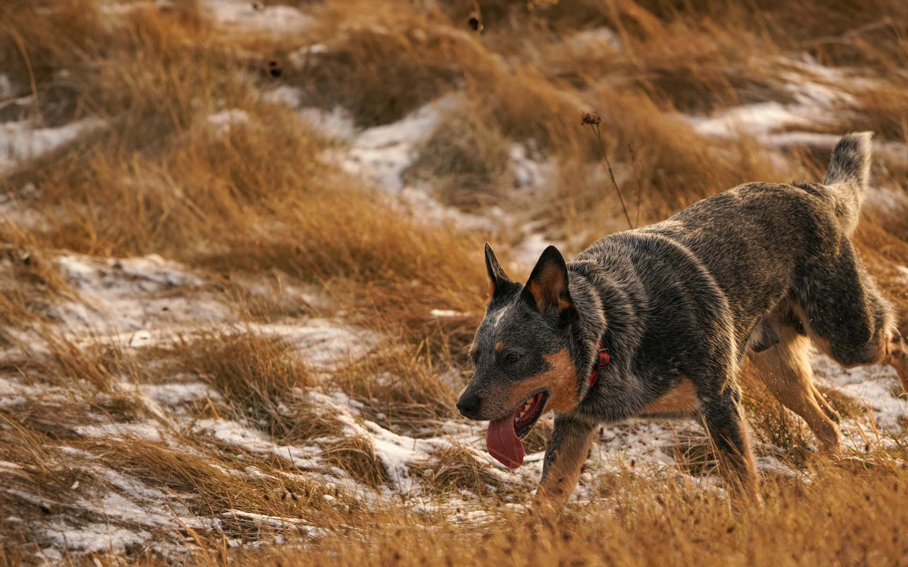
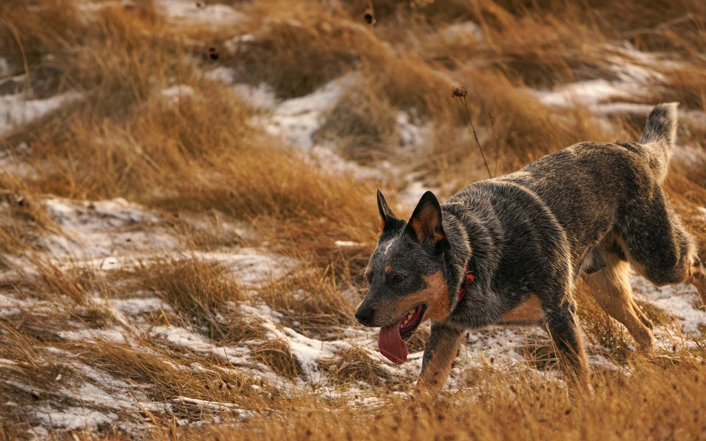
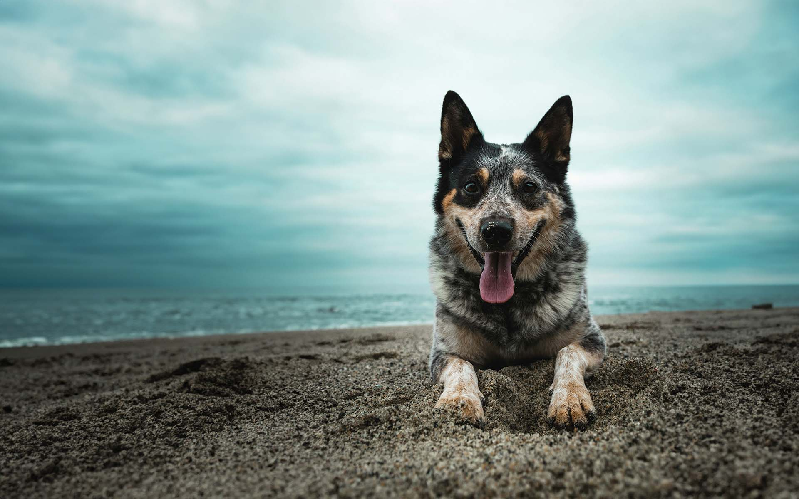
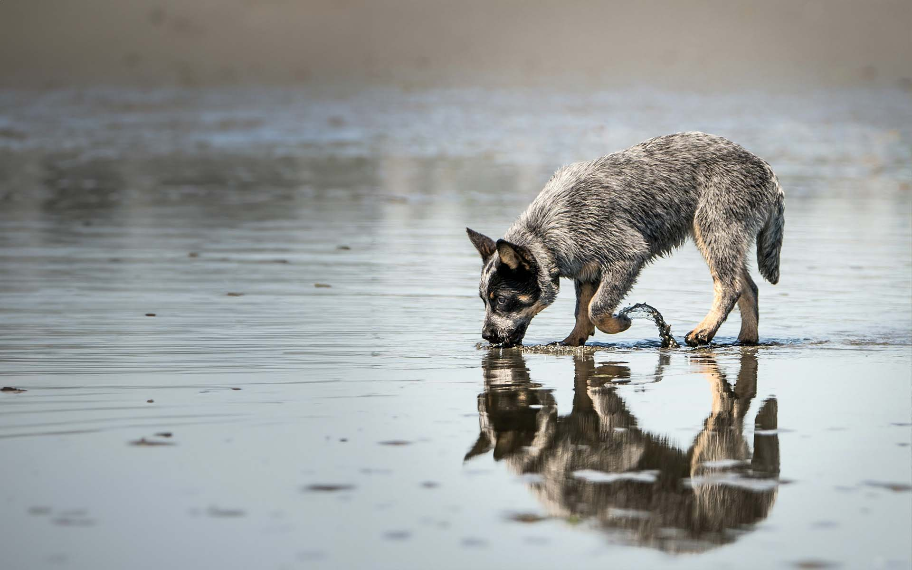
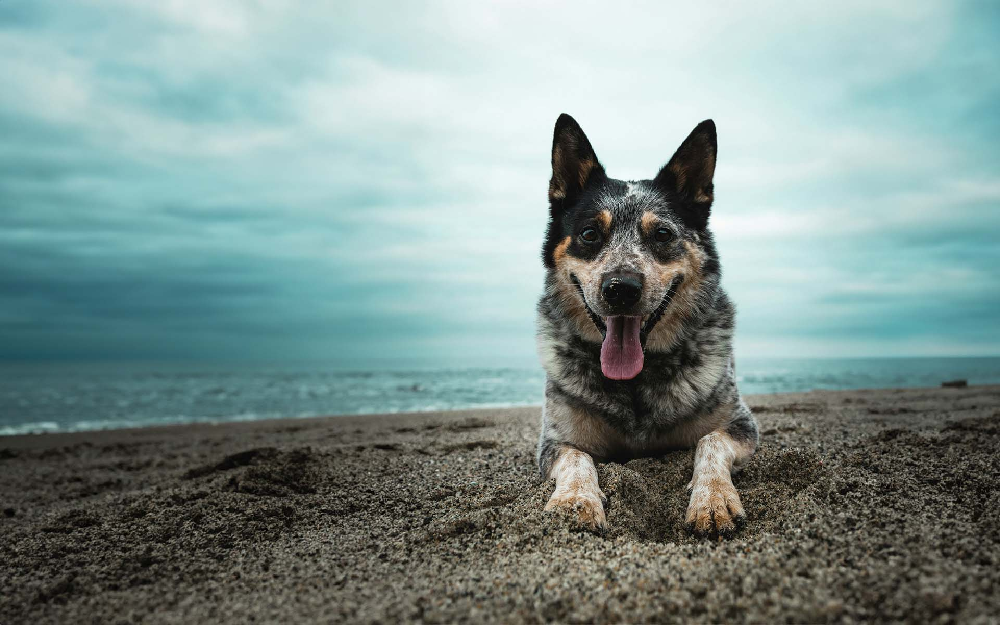
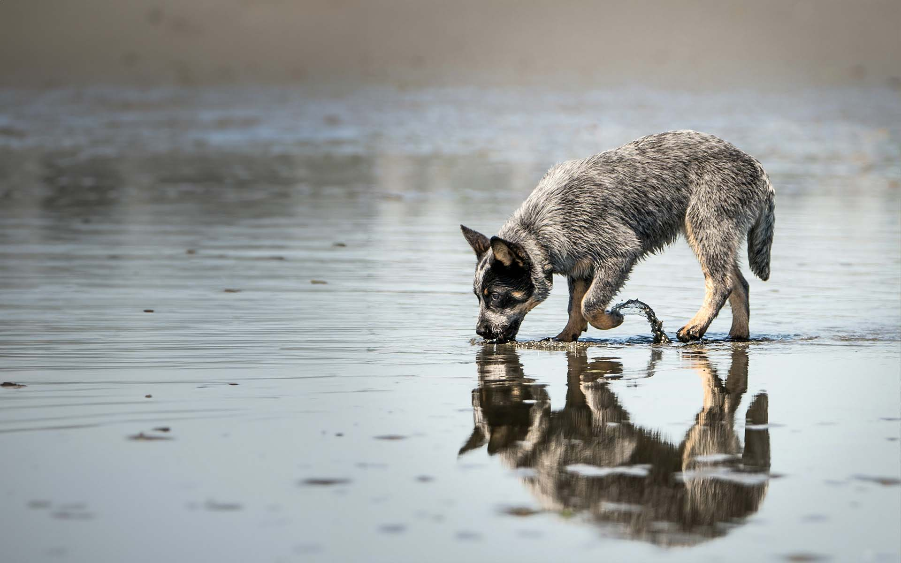

 



Nutrition
Provide a high-quality, balanced diet tailored to your dog's age, weight, and activity level. Monitor food intake to prevent obesity, and ensure access to clean, fresh water at all times.
Exercise and Mental Stimulation
Australian Cattle Dogs thrive on daily exercise and mental stimulation. Aim for at least 60 minutes of vigorous activity each day, including walks, runs, and play sessions. Engage their intelligent minds with interactive toys, puzzle games, and obedience training.
Grooming
Regular grooming is essential to keep your Australian Cattle Dog's coat healthy. Brush their coat weekly to remove loose hair and prevent matting. Bathe them as needed using a mild dog shampoo, and keep their nails trimmed to a comfortable length.
Health Care
Schedule routine veterinary check-ups to monitor your dog's health and ensure they're up-to-date on vaccinations. Use preventive measures to protect against fleas, ticks, and heartworms, and consult with your vet for personalized advice.
Training and Socialization
Start obedience training and socialization early to instill good behavior and manners. Use positive reinforcement techniques, and be consistent in your training efforts. Expose your Australian Cattle Dog to various people, animals, and environments to help them develop into well-rounded adults.
By following these care guidelines, you can provide your Australian Cattle Dog with a fulfilling and healthy life. Remember to tailor your care approach to meet your dog's individual needs and consult with your veterinarian for personalized advice.